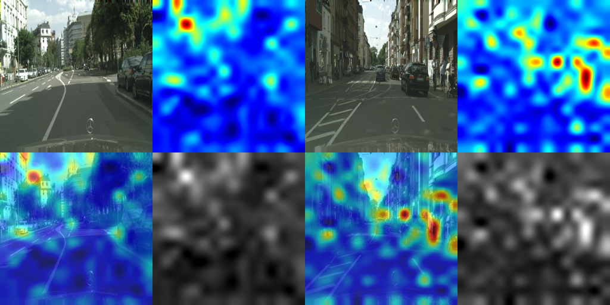
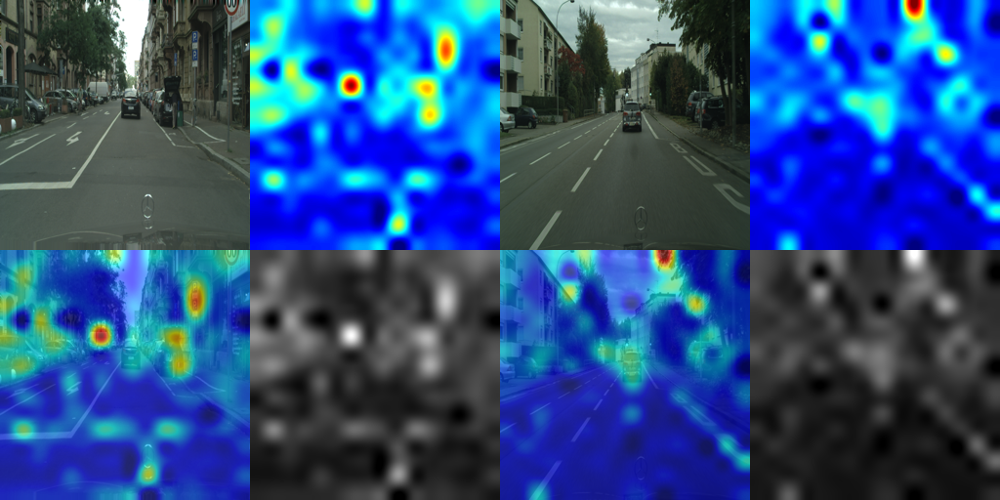
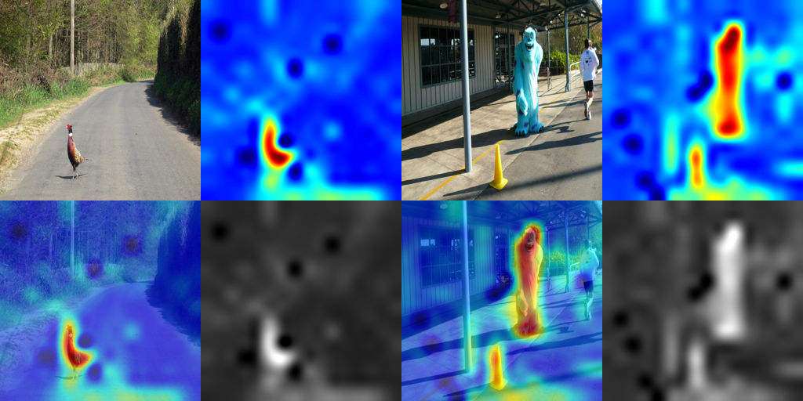
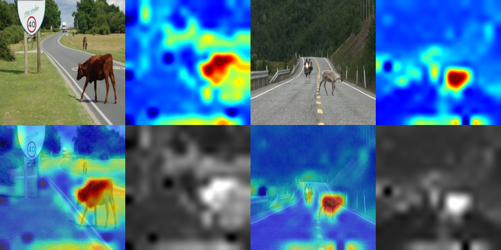

Abstract
Reliable out-of-distribution (OOD) detection is essential for the safe deployment of autonomous vehicles, yet most existing methods operate as black boxes and offer limited insight into why an input is flagged as anomalous. We propose DINO-R, a lightweight and explainable OOD detection framework that leverages frozen DINOv3 patch tokens and a small trainable transformer reconstructor. During training on in-distribution (ID) driving scenes only, the reconstructor learns to predict randomly masked feature tokens from their visible context. At inference, Monte-Carlo masking aggregates token-level reconstruction errors into a stable anomaly map and an image-level OOD score, jointly providing a detection decision and a spatially interpretable heatmap that highlights anomalous regions. On Cityscapes (ID) versus RoadAnomaly (OOD), DINO-R achieves an AUROC of 0.9945 and FPR@95%TPR of 0.0302, outperforming kNN, Mahalanobis, and pixel-reconstruction baselines while requiring no OOD data for training or threshold calibration. Qualitative visualizations confirm that the produced anomaly maps consistently localize novel objects, offering human-verifiable evidence for runtime monitoring of autonomous driving perception.
Architecture

Qualitative Examples




Video Inference Demo
Each video shows the original frame alongside the real-time anomaly heatmap produced by DINO-R. Warmer colors (red/orange) indicate higher anomaly scores.
Experimental Results
Evaluated on RoadAnomaly21 and RoadObstacle21 from the SegmentMeIfYouCan benchmark, with Cityscapes as the ID training set.
| Category | Method | AUROC ↑ | FPR@95 ↓ |
|---|---|---|---|
| Supervised | MSP | 0.4840 | 0.9148 |
| Supervised | MaxLogit | 0.4322 | 0.9410 |
| Supervised | Energy | 0.4052 | 0.9403 |
| Supervised | Energy + React | 0.4085 | 0.9390 |
| Supervised | ViM | 0.9939 | 0.0400 |
| Supervised | GradNorm | 0.4343 | 0.9239 |
| Supervised | KL-Matching | 0.5298 | 0.8866 |
| Unsupervised | DINO-K (kNN, k=1) | 0.9820 | 0.0695 |
| Unsupervised | DINO-M (Mahalanobis) | 0.9907 | 0.0439 |
| Unsupervised | MOOD-R (Pixel Recon.) | 0.8038 | 0.6354 |
| Unsupervised | DINO-R (Feature Recon.) | 0.9945 | 0.0302 |